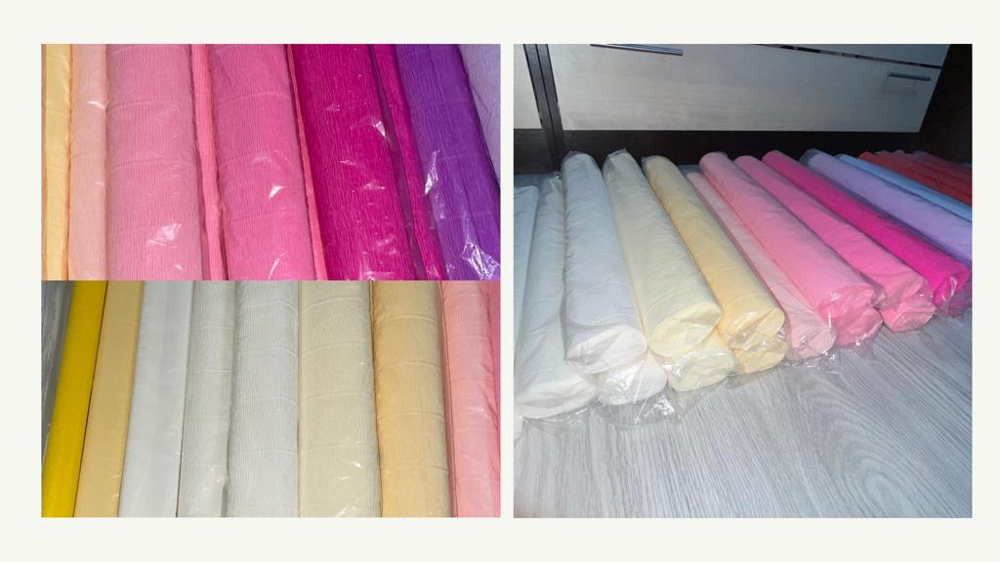
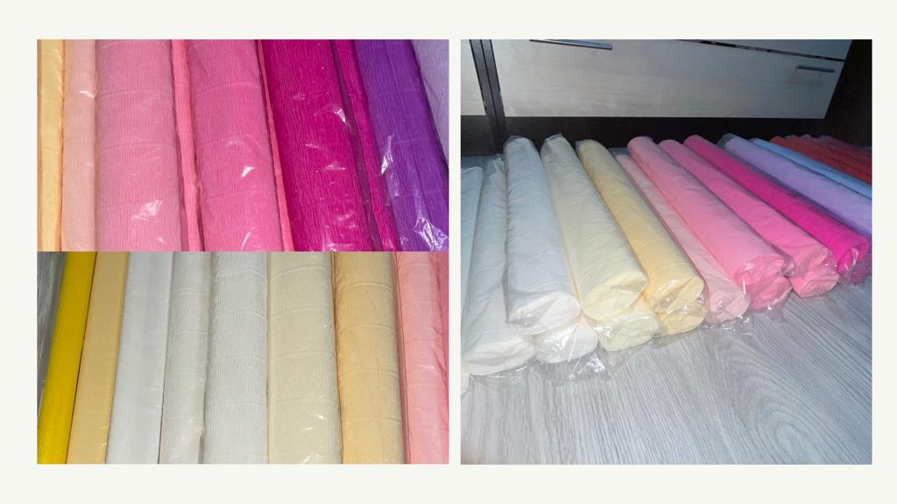
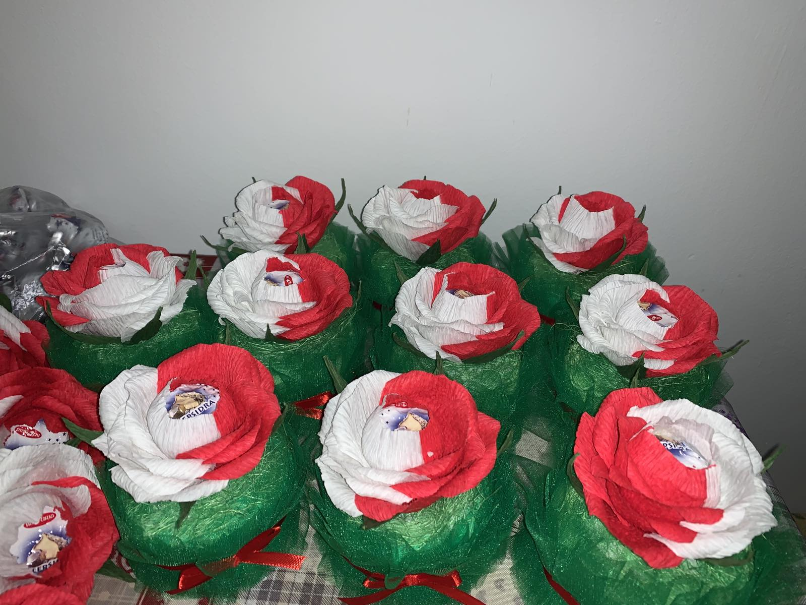
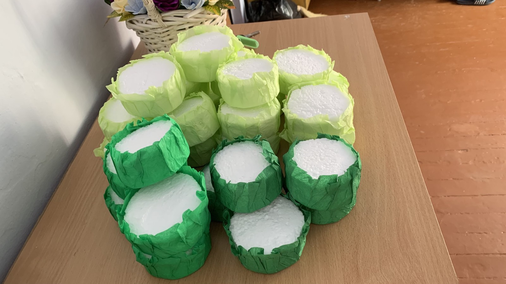
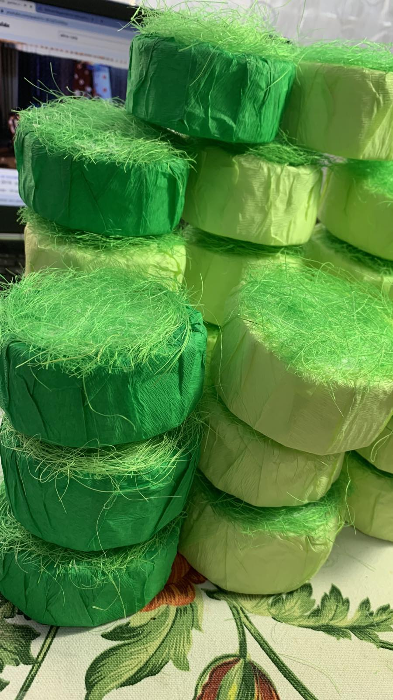
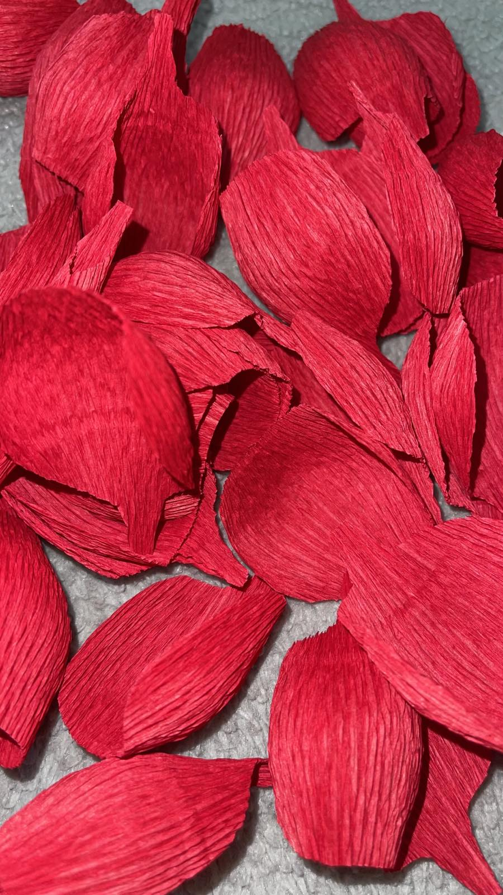
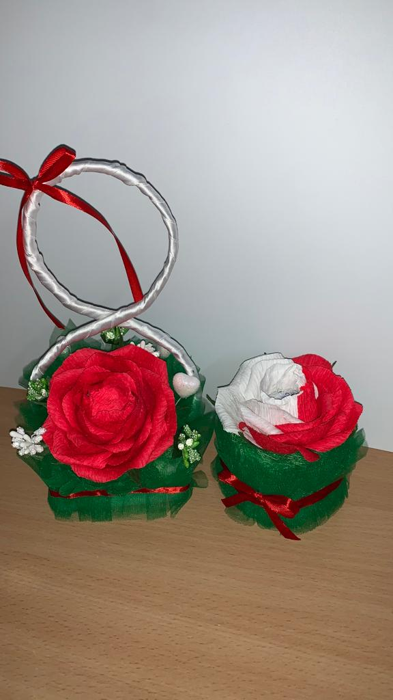
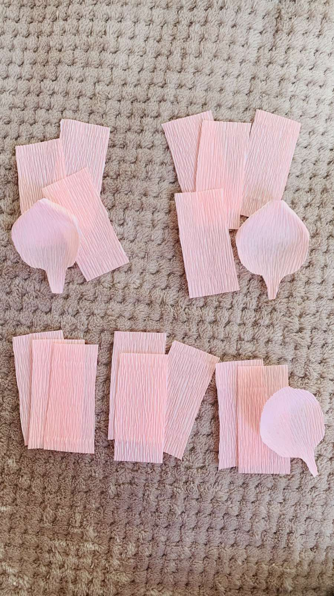
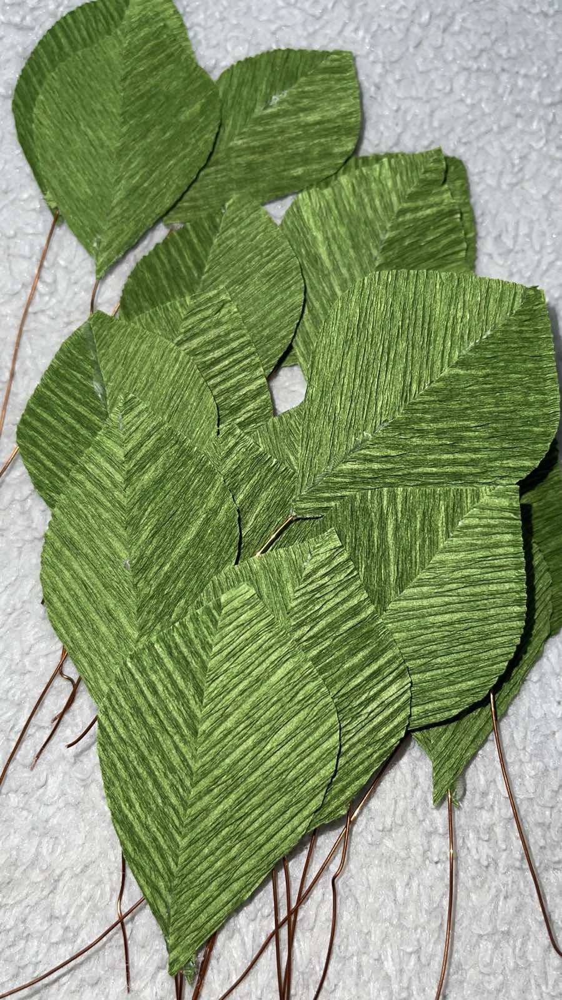
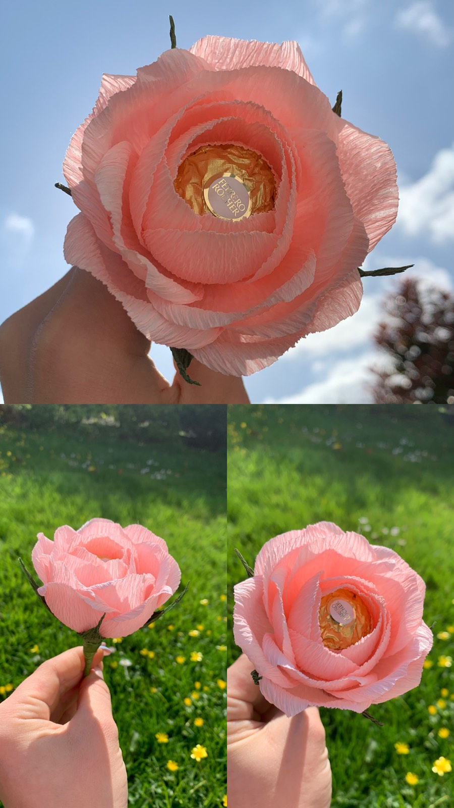

🔻Mă numesc Svetlana Banu.
🔻Am 22 de ani.
🔻Sunt studentă în anul 3 la facultatea de pedagogie Bogdan Petriceicu Hasdeu.
🔻Pentru mulți dintre noi, a face lucruri cu hârtie este prima noastră aventură lumea artelor și meșteșugurilor. În copilărie, îmi amintesc că am creat măști și pălării din de hârtie, tăind hârtie în fulgi de zăpadă și bucle, lanțuri lungi de ghirlande din hârtie colorată. Aceasta părea ca o magie, numărul de lucruri din care puteau fi făcute doar din hârtie.
🔻Ani mai târziu, sunt încă captivată de posibilități hârtiei. În calitate de creator, am realizat nummeroase lucrări personalizate pe care le puteți vedea aici pe pagină .
🔻Așadar, putem spune cu tărie faptul că hârtia este o materie primă din care pot ieși infinite modele cu doar puțină imaginație. Ea poate fi pliată, rulată, sculptată, mărunțită, tăiată, cusută, lipită și astfel să realizăm modele unice încărcate cu o avalanșă de emoții cu care putem impresioana si cele mai sofisticate gusturi. Cu hârtie, puteți crea articole de papetărie, bijuterii, decor pentru casă chiar și mobilier - și dvs nu aveți nevoie de o mulțime de instrumente scumpe! De fapt, multe din proiectele de hârtie necesită doar lipici și un instrument de tăiat bun.
🔻Deoarece hârtia este un material ușor disponibil și relativ ieftin pentru a lucra, a fost încorporat într-o serie de tradiții de artă populară de pe tot globul. Există simple, distractive proiecte care durează o oră sau două, proiecte mai complicate care vă vor lua a câteva zile. Și poate cel mai bun dintre toate, dintre aceste proiecte pot fi realizate cu hârtie reciclată, reutilizată sau veche. Asa ca hai să începeți și vedeți toate lucrurile pe care hârtia le poate face.

PAPETĂRÍE/papetării-Magazin sau raion într-o librărie în care se vând caiete, hârtie, creioane, penițe, pensule etc. Articole de papetărie = produs obținut sub formă de foi, hârtie sau de obiecte din pastă de fibre celulozice.
BIRÓTICĂ-Ansamblu de tehnici informatice: calculator, xerox, telefon folosite în activitățile administrative, de secretariat etc. Din fr.bureautique.
Așa sunt definite cei doi termeni folosiți cel mai adesea împreună, papetărie și birotică.
Evident, cuvintele papetărie și birotică au ajuns astăzi să înglobeze cu mult mai mult decât simplul lor sens din dicționar. Papetăria nu mai înseamnă doar acel raion din librărie de unde cumpărăm caiete pentru viitorul școlar, iar birotica a devenit un domeniu vast, ce se dezvoltă pe zi ce trece pentru a ține pasul cu trendurile vieții la birou și al lucrului de acasă.
Am ales să-mi aprovizionez stocurile de hârtie floristică de la producători internaționali
Folosesc hîrtie de cea mai bună calitate, procurată direct de la producator din Italia.
Hîrtia este rezistentă atât la soare cat și la umeditate destul de ridicată, ceea ce va oferi florilor dumneavoastra o rezisteță de luga durată. O amintire de hîrtie cu multe emoții.
Catotecnica Rossi dezvoltă înca din 1878 tehnici de prelucrare și creare a celei mai calitative și de înaltă performanță hârtie pentru decor și alte întrebuințări.
Cartotecnica Rossi: o continuitate în tradiție din 1878 Compania Cartotenica Rossi a fost fondată în 1878 de către domnul Francesco Rossi. Încă de la început, Cartotenica Rossi a dezvoltat cercetarea și producția de tot felul de hârtie.
În 2005, Cartotecnica Rossi a luat naștere și a absorbit producția de Hârtii Creponate și Tissue. Scopul Cartotecnica Rossi este de a urmări experiența istorică și de a urmări tradiția menținând know-how-ul, brandul, patrimoniul uman și profesional, calitatea, și seriozitatea.
Caracteristicile hârtiei sunt potrivite pentru multe utilizări datorită extensibilității, rezistenței și culorilor strălucitoare: animație, ambalaj, cofetărie, aranjamente florale, decorațiuni, vitrine).
Datorită cercetării și dezvoltării continue a acestui material simplu, compania, lider la nivel mondial, oferă o gamă largă și completă de hârtie creponată naturală metalizată și rezistentă la apă.
Toate lucrările sunt ideale pentru a exprima fantezia și fericirea creațiilor tale.
 

INSTRUMENTELE NECESARE SUNT: HARTIE CREPONATA, POLISTIREN, IARBA ARTIFICIALA, CIOCOLATA IN FORMA DE CON, PISTOL CU CLEI CALD
1.Taiem în bucați mici, rotunde polestirenul
2.Îl învelim în hârtie creponată
3.Punem iarba falsa în locul unde va sta floarea
4.Taiem petale din hârtie creponata alba, rosie L=7cm , l=5cm
5.Le asamblăm lipindu-le cu clei cald de o ciocolată

Formați petale din hârtie creponată din dimensiuni la alegere
Formați frunze din hârtie creponata de asemenea în dimensiunile dorite
 În cele din urmă, trebuie să aranjați petalele în jurul tulpinii. Pentru a face acest lucru, mai întâi de toate trebuie să începeți cu petalele mici, care aranjate într-un cerc de jur împrejur. Atașați-le folosind lipici și apoi repetați aceeași operație cu cele mai mari. Hârtia creponată fiind destul de maleabilă, faceți-vă timp pentru a vă juca cu forma și designul florii dvs.